🌱 Por que os cães comem grama?
Muitos buscam fibras extras para ajudar na digestão ou aliviar desconfortos. Se for frequente, observe a ração e fale com um vet.
O FofoPet foi criado para facilitar a rotina de quem ama. Aqui, unimos tecnologia e cuidado animal em ferramentas simples que ajudam você a monitorar a saúde do seu pet enquanto se diverte com nossos jogos educativos.
Verifique as vacinas anualmente.
Chocolate é tóxico para cães e gatos.
A hidratação correta é vital para prevenir doenças renais e manter a energia do seu pet.
Entender a fase de vida do seu pet ajuda a adaptar a dieta e o nível de atividades físicas.
Manter o reforço de vermífugos e antipulgas em dia protege não só o pet, mas toda a sua família.
Cão: Perda de apetite ou muita sede?
Aprender brincando é a melhor forma de cuidar! Nossos jogos foram criados para testar seus conhecimentos sobre alimentação e comportamento pet de forma leve e interativa.
Carregando pergunta...

Muitos buscam fibras extras para ajudar na digestão ou aliviar desconfortos. Se for frequente, observe a ração e fale com um vet.

Gatos bebem pouca água naturalmente. Use fontes e sachês para prevenir problemas renais. Calcule a meta dele acima!

Prevenção é economia! Mantenha vacinas em dia e use nossa ferramenta de controle financeiro para não estourar o orçamento.
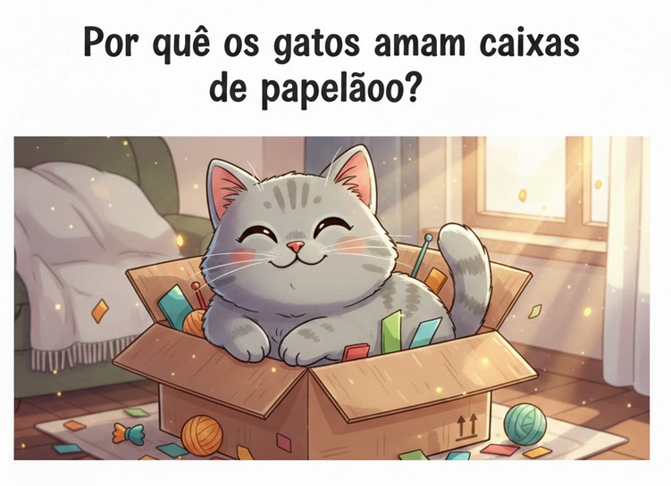
Você compra um arranhador novinho, cheio de níveis e brinquedos. Coloca no melhor canto da casa... e o gato passa reto. Minutos depois, lá está ele: enfiado dentro da caixa de papelão da embalagem. Se essa cena parece familiar, você não está sozinho! Esse comportamento tem explicações científicas fascinantes que ajudam a entender a natureza do seu pet.
Apesar de domésticos, os gatos continuam sendo predadores de emboscada. Na vida selvagem, eles sobrevivem observando e se escondendo. Caixas oferecem exatamente isso: um esconderijo fechado com proteção lateral e traseira. Para o cérebro felino, um espaço confinado significa controle total do ambiente e redução imediata do estresse.
Você sabia que a temperatura ideal para um gato é entre 30 e 36 °C? Isso é bem mais alto do que o conforto humano. O papelão é um isolante térmico incrível. Dentro de uma caixa, o corpo do animal aquece o ar rapidamente, criando um "mini aquecedor natural". Isso permite que o gato conserve energia e se sinta relaxado.
Estudos em abrigos mostram que gatos que recebem caixas de papelão se adaptam muito mais rápido a novos lares. A caixa funciona como um "porto seguro" emocional. Quando o gato sabe que tem onde se esconder, ele se sente mais confiante para explorar o restante da casa.
Para garantir que a diversão seja segura, siga estes cuidados essenciais:
Dica FofoPet: Entender esses pequenos detalhes é a melhor forma de retribuir o carinho que seu pet te dá todos os dias!
(Adaptação é processo, não evento)
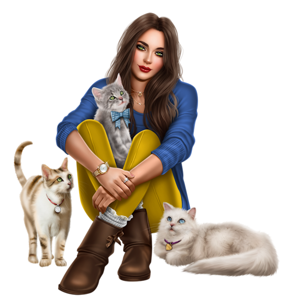
Gatos são territoriais por natureza. Quando um novo gato chega, o residente não pensa “amiguinho novo”, e sim: 👉 “Invadiram meu território.”
Apresentação rápida demais quase sempre termina em rosnados, brigas, xixi fora do lugar e estresse. Mas feito do jeito certo, eles podem conviver — e até virar parceiros de soneca 😸
🧩 Dica crucial: recursos duplicados. A casa precisa ter caixas de areia e comedouros extras para evitar competição.
⏳ Quanto tempo leva? Pode levar dias ou semanas. Respeite o ritmo individual de cada pet.
(Beleza que pode esconder sérios riscos para pets)
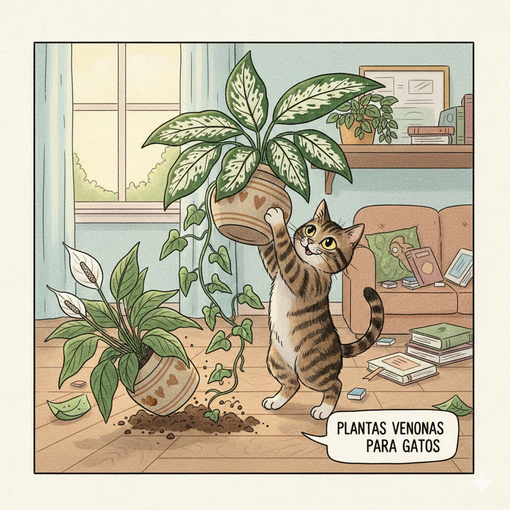
Muitas plantas ornamentais são altamente tóxicas se ingeridas.
Ter plantas em casa traz vida e frescor, mas para quem convive com cães e gatos, a escolha precisa ser estratégica. O que para nós é apenas decoração, para um pet curioso pode virar um brinquedo perigoso ou um "lanche" fatal.
A ingestão de folhas, flores ou até da água do vaso pode causar desde irritações gástricas até falências de órgãos em poucas horas.
🧩 Dica de Segurança: Se você ama plantas, prefira as "Pet Friendly", como a Orquídea, Clorofito ou a Palmeira-areca. Elas são seguras e deixam a casa linda!
📢 O que fazer em caso de ingestão? Não tente induzir o vômito em casa. Procure um veterinário imediatamente levando uma foto ou uma folha da planta para identificação rápida.
(Diferenças fundamentais antes de dizer "sim")
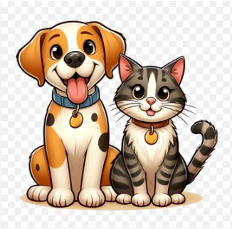
Ambos trazem alegria, mas exigem compromissos diferentes do tutor.
A decisão de adotar um pet é emocionante, mas escolher entre um cão e um gato vai muito além da preferência pessoal. Cada espécie exige um estilo de vida diferente. Para ajudar você nessa missão, preparamos este comparativo real.
| Aspecto | 🐶 Cachorro | 🐱 Gato |
|---|---|---|
| Tempo | Exige passeios diários e muita interação social ativa. | Mais independente, mas exige brincadeiras e presença. |
| Espaço | Precisa de área para circular ou saídas frequentes. | Adapta-se bem a apartamentos (explora alturas). |
| Higiene | Banhos frequentes e controle de odores no ambiente. | Autolimpantes; exige limpeza diária da caixa de areia. |
Rotina: Se você passa muitas horas fora, um cachorro pode sofrer com ansiedade de separação. O gato lida melhor com a solidão, desde que tenha enriquecimento ambiental.
Custo: Cães costumam ter gastos maiores com manutenção (banho e tosa). Gatos exigem o investimento inicial em telas de proteção e o gasto mensal com areia.
Responda honestamente:
(A saúde renal começa pelo pote de água)
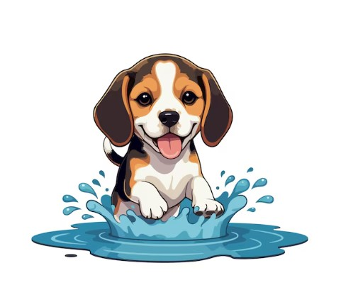
Água limpa e fresca deve estar sempre disponível.
Muitos pets, especialmente os gatos, têm um baixo instinto de sede. Na natureza, eles retiravam a água das presas, mas com a ração seca, a conta não fecha. A falta de hidratação pode levar a cálculos renais e infecções urinárias graves.
(Eles não falam — mas o corpo conta tudo)
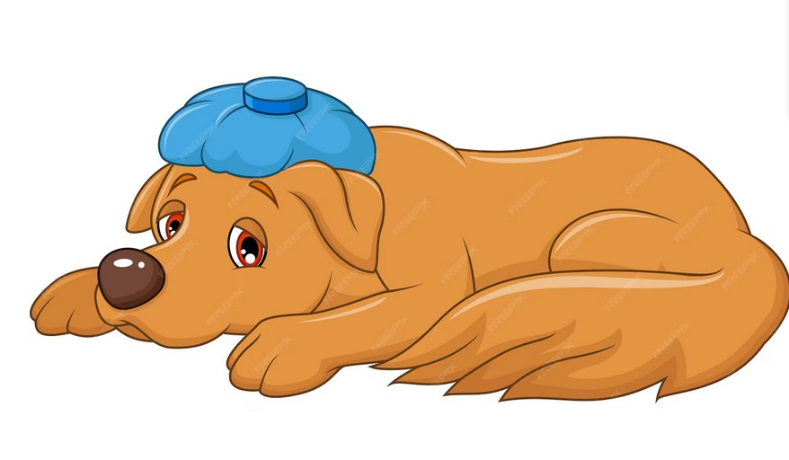
Cães e gatos escondem dor por instinto. Observar mudanças salva vidas.
Na natureza, demonstrar fraqueza é perigoso. Por isso, quando os sinais de dor aparecem, o problema pode já estar avançado. Aprender a observar pequenas mudanças pode ser o diferencial para o bem-estar do seu amigo.
Procure um veterinário agora se houver: dificuldade para respirar, desmaio, incapacidade de ficar em pé, barriga muito inchada ou convulsões.
(Amor que se adapta à melhor idade)
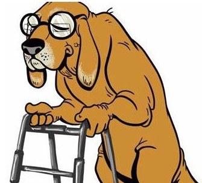
O amor que você dá hoje é o que garante o conforto de amanhã.
Com o passar dos anos, o corpo do seu cão muda — e a forma como você cuida dele também precisa mudar 💛. Cães idosos começam a apresentar sinais de envelhecimento de forma sutil, e com atenção você pode transformar essa fase em conforto, bem-estar e qualidade de vida.
A idade em que o cão se torna “senior” depende do porte:
Cada cão tem seu ritmo, mas sinais como menos energia, dificuldade para locomover e mudança no apetite indicam que a fase sênior chegou.
Camas e descanso: Camas macias e ortopédicas ajudam a aliviar a pressão nas articulações e reduzem desconforto, especialmente em cães com dores ou rigidez.
Rampas e acessibilidade: Rampas ou escadas baixas permitem que o cão acesse camas, sofá ou carro sem pulos, que podem machucar as articulações com o tempo.
Segurança no piso: Tapetes antiderrapantes evitam escorregões em pisos lisos, que são comuns e dolorosos em cães idosos.
Com a idade, o metabolismo desacelera — e a dieta precisa acompanhar isso:
Cães idosos devem visitar o veterinário com mais regularidade. Exames de rotina podem identificar precocemente problemas no coração, rins, dentes e alterações hormonais.
Mesmo com menos energia, o cão sênior precisa se movimentar:
Alguns sinais podem indicar que é hora de uma avaliação mais urgente:
Confira guias educativos completos sobre a melhor idade:
(Calma, ação rápida e informação salvam vidas)
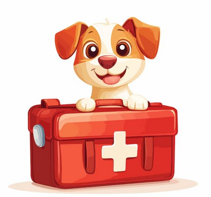
Em emergências, cada minuto conta. Esteja preparado.
Primeiros socorros não substituem o veterinário, mas podem manter seu pet estável até o atendimento. Prevenção começa antes do susto.
*Use apenas sob orientação veterinária.
🩸 Ferimentos: Limpe com soro e pressione com gaze limpa. Se o sangramento não parar em 5–10 min, é urgente. Nunca use álcool.
🌡️ Queimaduras: Resfrie a área apenas com água corrente fria. Não passe pomadas, manteiga ou pasta de dente. Cubra com gaze limpa.
🍫 Intoxicação: Observe se há vômito, salivação ou tremores. Não provoque vômito sozinho. Leve a embalagem do que foi ingerido.
🦴 Engasgo: Se o pet estiver desesperado e sem som, abra a boca com cuidado. Se não conseguir remover o objeto facilmente, voe para o veterinário.
🧊 Convulsões: Afaste objetos, não coloque a mão na boca dele e cronometre o tempo. Crises acima de 5 min são gravíssimas.
🚗 Trauma ou Queda: Mesmo que pareça bem, pode haver lesão interna. Movimente o pet o mínimo possível e use uma superfície firme (tábua ou maca) para transporte.
Fontes oficiais para aprofundar seu conhecimento:
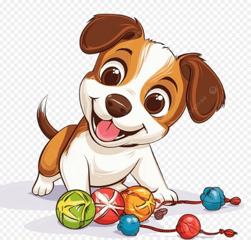
Afinal, cães têm senso de humor? Quem convive com um cachorro já se perguntou: “Ele está fazendo isso de propósito?” A resposta, na maioria das vezes, é sim! Os cães expressam alegria e vontade de brincar de maneiras que parecem verdadeiras cenas de comédia.
Sabe aquele espirro seco no meio da bagunça? Não é poeira! É um sinal social que significa: “Isso é só brincadeira, não estou sendo agressivo”. É o verdadeiro emoji de paz dos cães ✌️.
Cães sorriem com a boca levemente aberta, língua relaxada e olhos suaves. Quando esse "sorriso" aparece acompanhado do rabo abanando, é sinal de que ele está curtindo o momento ao máximo.
Bumbum para cima, peito no chão: o convite universal para a bagunça! Ele usa isso para dizer que a palhaçada vai começar e que qualquer movimento seguinte é pura diversão.
Quando ele pega sua meia e olha para trás, ele está iniciando o jogo do “pegue-me se for capaz”. Para ele, não é sobre a meia, é sobre a perseguição e a diversão compartilhada com você.
Resmungos e "grunhidos falantes" são formas de comunicação pura. Algumas raças adoram "comentar" o que está acontecendo, trazendo um toque de comédia involuntária para o dia a dia.
Conclusão: Um cachorro que brinca é um cachorro saudável. Agora que você já sabe identificar esses sinais, aproveite para se divertir com ele! 🐾🎮
(Solidão pode virar sofrimento — mas tem solução)
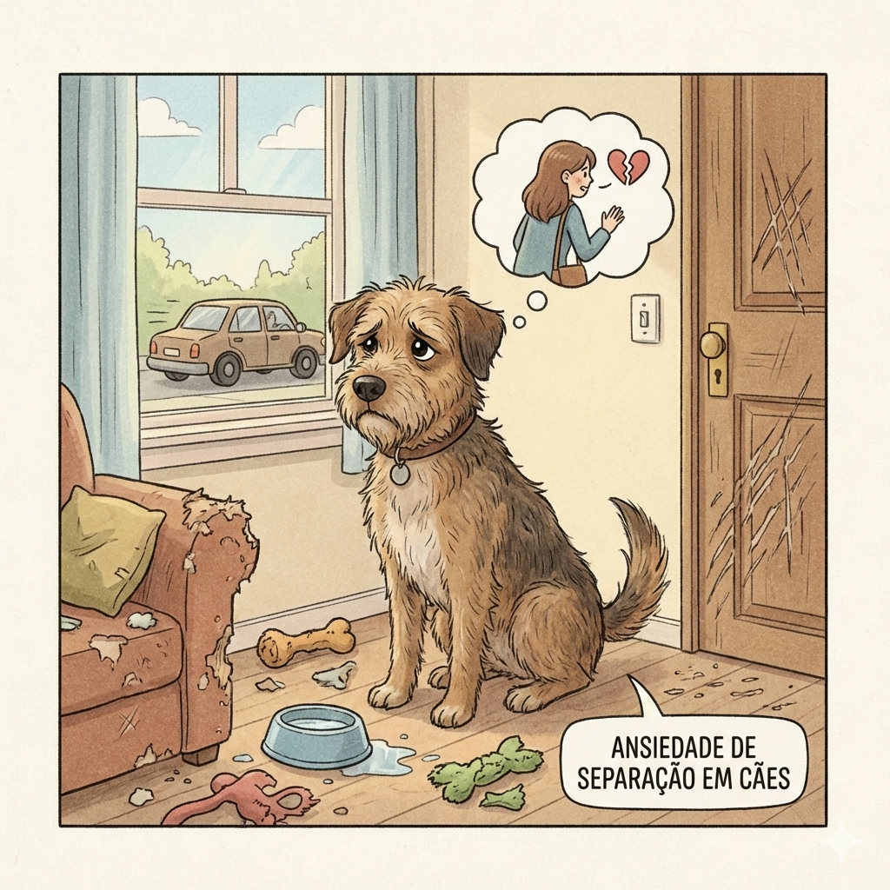
Seu cachorro não está “fazendo pirraça”, ele está pedindo ajuda.
Quando seu cão destrói coisas, late sem parar ou faz xixi quando você sai, muitas vezes é ansiedade, não desobediência. Para alguns cães, ficar sozinho é angustiante de verdade; ele não entende que você volta. Para ele, pode parecer abandono.
1. Treino de saídas graduais: Comece saindo por 1–2 minutos e volte antes dele entrar em pânico. Aumente o tempo aos poucos.
2. Gaste energia: Passeios e brincadeiras antes de sair ajudam. Cão cansado = mente mais calma.
3. Enriquecimento Ambiental: Deixe brinquedos recheáveis com petiscos ou tapetes de farejar. Eles ajudam o cão a associar sua saída a algo positivo.
🐱 Banho de Sol: Gatos precisam de vitamina D e calor. Garanta um cantinho ensolarado para o seu miau!
🐶 Hidratação: Troque a água do seu cão pelo menos 2x ao dia. Água fresca previne problemas renais.
🧼 Patinhas Limpas: Após o passeio, limpe as patas com lenços umedecidos próprios para pets para evitar alergias.
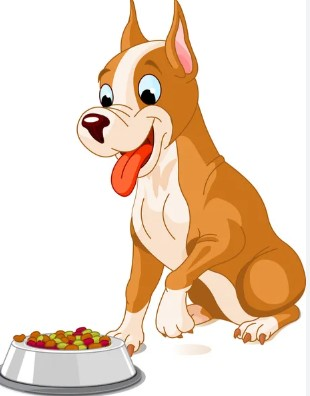
⚠️ Aviso Importante: O FofoPet é um site educativo e informativo. Não somos veterinários nem especialistas em nutrição animal. Em caso de ingestão acidental de alimentos proibidos ou qualquer alteração na saúde do seu pet, procure imediatamente um médico veterinário.
Todo tutor já ouviu que chocolate faz mal, mas a lista de perigos é muito maior. Muitos alimentos do nosso dia a dia parecem inofensivos, mas para o organismo deles, podem ser fatais.
Seja cru ou cozido, esses alimentos atacam os glóbulos vermelhos, causando anemia e vômitos. Mesmo pequenas quantidades acumuladas ao longo do tempo são perigosas.
Um dos mais traiçoeiros! Podem causar falência renal aguda. Não existe dose segura; se ele comeu, é veterinário na certa.
Contém persina, que causa problemas gastrointestinais. Além disso, o caroço representa um risco enorme de engasgo.
Ao contrário dos ossos crus e recreativos, os cozidos quebram formando pontas afiadas que podem perfurar o intestino.
Restos de churrasco ou batata frita podem causar pancreatite e intoxicação por sódio. Se tem muito óleo, não é para o pet.
Dica FofoPet: Amar também é saber dizer não ao olhar pidão! No nosso site, jogue o desafio "Pode Comer?" para fixar o que aprendeu hoje! 🥕❌🍇
Outros cuidados: nada de temperos, fritura ou sal. Petiscos devem ser no máximo 10% da alimentação diária.
🚨 Se o seu pet ingerir algo proibido, procure um veterinário imediatamente!
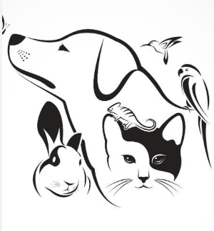
Adotar é um ato de amor! Mas antes da chegada do seu novo amigo, você precisa preparar o ambiente com o "Kit Sobrevivência" básico para garantir uma adaptação tranquila.
Se você decidiu abrir o coração para um pet, existem lugares incríveis onde milhares de animais esperam por um lar:
Lembre-se: Adotar um animal adulto é um gesto nobre! Eles costumam ser mais tranquilos, já têm a personalidade formada e são extremamente gratos.
Dica FofoPet: Explore nossos conteúdos e jogos interativos para aprender mais sobre o mundo animal enquanto se diverte! 🐶🐱🎮
(Conforto, saúde e zero estresse)
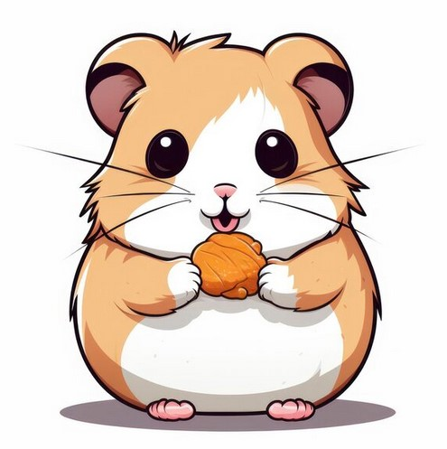
Hamster feliz é hamster que se sente seguro e estimulado.
Hamsters são pequenos, mas extremamente sensíveis ao ambiente — e como passam quase toda a vida dentro da gaiola, o habitat certo define a saúde física e emocional deles.
Espaço é essencial — nada de gaiolas minúsculas. O ideal é:
Hamsters adoram cavar e explorar, então o ambiente precisa permitir esse comportamento natural.
✔ Bebedouro: Tipo garrafa para manter a água sempre limpa.
✔ Comedouro: Estável, de preferência cerâmico para não virar.
✔ Casinha: Uma toca para descanso e sensação de segurança.
✔ Substrato: Profundo e seguro para cavar túneis. ⚠️ Evite serragem de pinho ou cedro.
Fique atento aos sinais de estresse: roer grades sem parar, andar em círculos ou agressividade repentina. Causas comuns incluem excesso de manuseio, falta de esconderijos ou ambientes barulhentos.
Rodas fechadas (sólidas), túneis de papelão e itens de madeira natural para roer e gastar os dentes.
Água fresca todos os dias, limpeza semanal da gaiola e ração específica de alta qualidade.
Consulte guias de especialistas internacionais em bem-estar:
(A dieta ideal: feno, vitamina C e alimentos seguros)
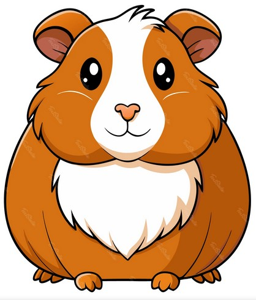
A saúde do porquinho começa por uma dieta rica em fibras e vitamina C.
Porquinhos-da-Índia têm necessidades alimentares bem específicas — eles **não conseguem produzir vitamina C sozinhos**, então precisam receber pela dieta. Sem isso, podem desenvolver doenças graves como o escorbuto.
O feno de boa qualidade deve estar disponível 24h por dia. Ele é essencial para:
⚠️ Evite feno amarelo ou com muito pó, pois possuem baixa nutrição.
Forneça diariamente uma variação de:
Pimentão (todas as cores), Pepino, Acelga, Alface Romana, Rúcula, Salsa e Coentro.
Estes alimentos mantêm o sistema imunológico forte e garantem a hidratação.
Frutas: Ofereça como petisco (poucas vezes na semana) devido ao açúcar. Maçã (sem sementes), morango e kiwi são ótimas opções.
Ração: Use apenas as específicas para porquinhos-da-índia. ⚠️ Evite misturas tipo "muesli" com sementes e grãos, que causam obesidade.
Nunca ofereça: Carne, laticínios, pães, biscoitos, doces, batata, milho ou qualquer semente/nozes. Estes itens podem ser fatais ou causar cólicas severas.
(Mente ocupada é ave saudável)
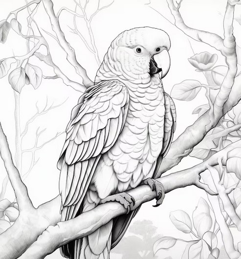
A inteligência das aves exige desafios diários para evitar o estresse.
Papagaios e aves de bico curvo são alguns dos animais mais inteligentes do reino animal. Na natureza, gastam o dia explorando, buscando comida e interagindo. Em cativeiro, a falta de desafios leva ao tédio e a comportamentos graves, como o arrancamento de penas. O enriquecimento não é luxo — é necessidade.
São estímulos que permitem à ave expressar comportamentos naturais e resolver desafios. Sem isso, aves inteligentes podem entrar em colapso emocional, mesmo com comida e água disponíveis.
Evite brinquedos com partes pequenas que possam ser engolidas, objetos com tinta tóxica e sons excessivamente altos que gerem pânico na ave.
(Bem-estar que dá para ver no comportamento)
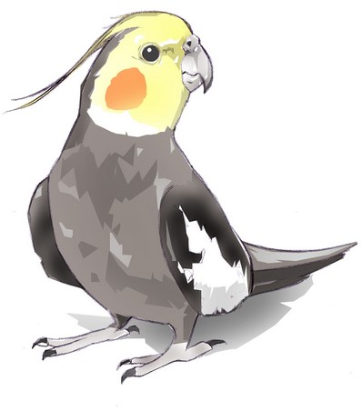
Calopsitas expressam felicidade através de assobios, da crista e da interação.
Calopsitas são aves muito expressivas. Quando estão felizes e se sentem seguras, elas demonstram isso claramente através do corpo, dos sons e da interação com o tutor. Aprender a reconhecer esses sinais ajuda a garantir que sua ave esteja vivendo com conforto e equilíbrio.
O canto é uma forma de expressão e comunicação. Calopsitas felizes costumam assobiar, imitar sons e fazer barulhinhos suaves. Uma ave quieta demais por muito tempo pode estar estressada ou doente.
A crista (peninhas da cabeça) revela muito sobre o estado de espírito:
Se ela abaixa a cabeça pedindo carinho ou sobe na sua mão espontaneamente, ela se sente segura ao seu lado.
Uma ave que "se penteia" e mantém as penas alinhadas está relaxada e saudável.
Calopsitas felizes são curiosas. Mastigar brinquedos, subir em poleiros e explorar objetos novos indica que ela está mentalmente ativa e confortável no ambiente.
Procure ajuda veterinária se a ave parar de cantar de repente, ficar sempre arrepiada, parar de comer ou se esconder o tempo todo. Mudanças bruscas de comportamento são alertas de saúde.
(Saúde e nutrição para o seu orelhudo)
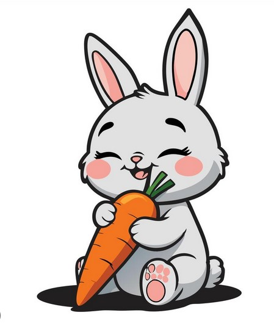
A base da saúde de um coelho começa por uma digestão equilibrada.
Muitas pessoas acreditam que coelhos vivem apenas de cenoura e ração, mas a realidade é bem diferente. Coelhos são herbívoros estritos com um sistema digestivo complexo que precisa de movimento constante. O manejo correto evita doenças graves e garante uma vida longa.
Cerca de 80% da dieta do coelho deve ser feno de capim. Ele é vital por dois motivos:
Complemente a base de feno com:
❌ Alface clara (causa diarreia), chocolate, pão, biscoitos, batata ou qualquer tipo de grão e semente processada.
(Bem-estar que começa na água)
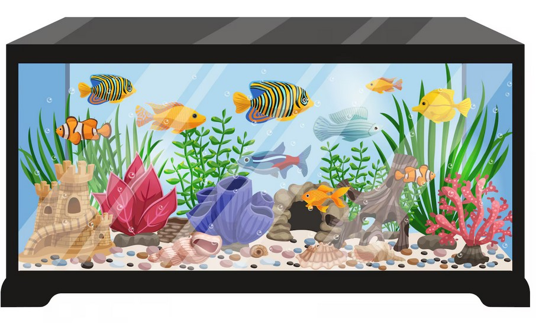
Cuidar de um peixe é cuidar de um ecossistema inteiro.
Peixes parecem simples de cuidar, mas são extremamente sensíveis ao ambiente. Um aquário mal cuidado pode causar estresse, doenças e até morte silenciosa. O segredo para um peixe saudável não está apenas na comida, mas na química da água.
A água é o “ar” do peixe. Para ser segura, ela precisa estar:
Temperatura: Peixes tropicais precisam de água morna constante, enquanto os de água fria dispensam aquecedores. Evite mudanças bruscas para não causar choque térmico.
Tamanho: Aquários pequenos acumulam toxinas rápido demais. Quanto maior o volume de água, mais estável e seguro é o ambiente.
Abrigo: Use plantas e esconderijos. Um ambiente vazio gera estresse crônico no animal.
O excesso de ração é o maior vilão do aquário. Restos de comida apodrecem e viram veneno. Ofereça apenas o que eles comem em poucos minutos e escolha rações específicas para a espécie.
Fique atento se o peixe nadar de lado, boiar, ficar parado no fundo, apresentar manchas brancas (ictio) ou respiração muito acelerada na superfície.